Contents
- 1. Introduction
- 1.1 What Sundial does
- 1.2 Package contents
- 1.3 Names used in the project
- 2. Requirements
- 3. Getting Started
- 3.1 Create a new project
- 3.2 Import Sundial
- 3.3 The Setup window
- 3.4 Try the demo scene
- 3.5 Video tutorial
- 4. Setup Guide
- 4.1 Add Sundial to the scene
- 4.2 Sun, moon and sky
- 4.3 Weather
- 4.4 Character controller
- 4.5 Your own assets
- 4.6 Press Play
- 4.7 Setting up by hand
- 5. Day and Night
- 5.1 How time works
- 5.2 The sky through the day
- 5.3 Bright nights
- 5.4 Previewing in the Editor
- 6. Weather
- 6.1 The six weathers
- 6.2 Choosing the weather
- 6.3 Rain
- 6.4 Lightning
- 7. The Clock and Time Dial
- 7.1 The clock button
- 7.2 Opening the dial
- 7.3 Using the dial
- 7.4 Skipping time
- 8. Ambient Audio
- 9. Using Your Own Assets
- 9.1 Skies
- 9.2 Sounds
- 9.3 Lightning
- 9.4 Weather effects
- 10. Component Reference
- 10.1 SkyClock
- 10.2 SkyboxCycle
- 10.3 WeatherSystem
- 10.4 AmbientAudio
- 10.5 SkyClockUI
- 10.6 Sky Preset
- 11. Script Reference
- 11.1 SkyClock
- 11.2 WeatherSystem
- 11.3 SkyClockUI
- 11.4 Examples
- 12. Editor Tools
- 13. Technical Notes
- 14. Troubleshooting
- 15. Support and Version History
1. Introduction
1.1 What Sundial does
Sundial gives your Unity scene a living sky. Time passes on its own, the sky fades smoothly through night, sunrise, day and sunset, and the weather changes at random, or stays exactly as you set it for each environment. Players can choose the time of day on a time dial, and the sky skips ahead with an animation.
| Feature | What you get |
|---|---|
| Day and night | Blended panoramic skies, a sun and moon light, fog and ambient light that follow the time. Bright, stylized nights. Preview any hour in the Editor. |
| Weather | Clear, Rain, Snow, Storm, Thunderstorm and Blizzard. Random weather from a list you choose, or one fixed weather per environment. |
| Lightning | Branching bolts that strike fast and smoothly, with impact effects, lightning inside the clouds, a light flash, Bloom, and thunder timed to the strike's distance. |
| Clock and time dial | An on-screen clock with day/night and weather, and a time dial: drag to a time, each full turn adds a day, and Confirm skips the sky ahead. |
| Ambient audio | Rain, wind, birds, crickets, storm and thunder, fading with the weather and time of day. Placeholder sounds are generated, so it works without audio files. |
| Your own assets | Slots for your own skies, sounds, lightning prefabs and any effect for any weather. |
| For programmers | Events, in-game timers, save and load, and a small, documented API. |
| Editor tools | A Setup window with one-click setup, and an icon for each component. |
1.2 Package contents
| Folder / file | Contents |
|---|---|
Demo/ | The demo scene SkyClock Demo, its materials and its post-processing profile. |
Documentation/ | This manual. |
Editor/ | The Sundial Setup window and the component icons. Editor only; not included in builds. |
Presets/ | SkyClock Default, the default Sky Preset. |
Scripts/ | The runtime scripts, the two URP shaders and the SkyClock assembly definition. |
Skies/ | Six original panoramas: Day, Sunrise, Sunset, Night, Rainy and Snowy (2048 × 1024). |
SkyClock Sky.mat | The sky material used by SkyboxCycle. |
README.md | A short text version of the quick start. |
1.3 Names used in the project
Sundial is the product name. Inside your project the folder is Assets/SkyClock, the scripts use the namespace SkyClockKit, and the assemblies are called SkyClock (runtime) and SkyClock.Editor (Editor only).
2. Requirements
| Item | Requirement |
|---|---|
| Unity | Unity 6. Developed and tested with Unity 6000.6. |
| Render pipeline | Universal Render Pipeline (URP), tested with URP 17.6. The Built-in Render Pipeline and HDRP are not supported. |
| Packages | Universal RP, Input System and Unity UI (uGUI). All three come with Unity 6's URP templates. |
| Input | The Input System package, used for the keyboard shortcuts and for mouse and touch input on the dial. |
| Post-processing | Optional. Bloom makes the lightning glow; everything works without it. |
| Platforms | Any platform URP supports. The time dial works with mouse and touch. |
3. Getting Started
This chapter takes you from an empty project to Sundial running in your scene. It takes a few minutes.
3.1 Create a new project
If you already have a Unity 6 project that uses URP, open it and go to 3.2.
- Open Unity Hub and click New project.
- Choose a Unity 6 Editor version.
- Select the Universal 3D template (URP).
- Name the project, choose where to save it and click Create project.
3.2 Import Sundial
- In Unity, open Window › Package Manager.
- Select My Assets and find Sundial.
- Click Download, then Import.
- Unity lists every file in the package, all marked New. Keep everything ticked and click Import.
- Wait while Unity compiles the scripts. The Console should show no errors.
Everything is placed in one folder, Assets/SkyClock.
UnityEngine.InputSystem or UnityEngine.Rendering.Universal, install the Input System or Universal RP package from the Package Manager.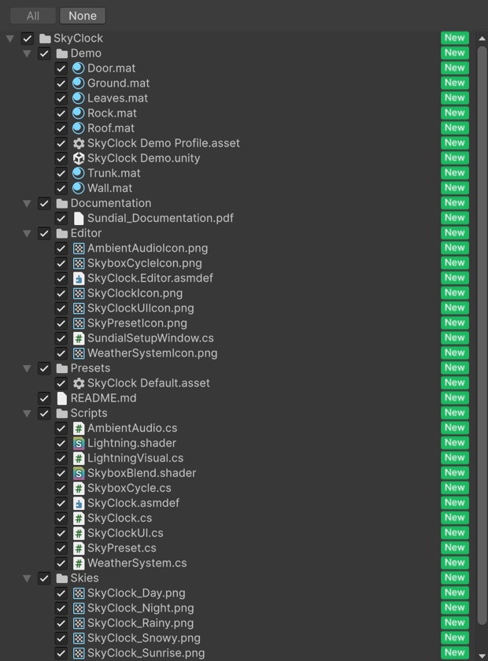
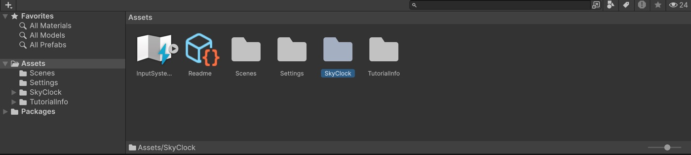
3.3 The Setup window
When the scripts have compiled, the Sundial Setup window opens by itself. It walks you through the setup in six numbered steps, and adds Sundial to your scene with one click. Chapter 4 explains each step.
Open the window again at any time from Tools › Sundial › Setup Guide.
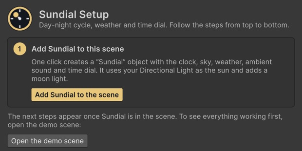
3.4 Try the demo scene
To see everything working before you set up your own scene, open Assets/SkyClock/Demo/SkyClock Demo and press Play. Click the clock in the top-right corner (or press F2) to open the time dial. To see a particular weather, select the SkyClock object and change WeatherSystem › Choice, for example to Thunderstorm; the change applies straight away in Play mode.
3.5 Video tutorial
This video shows the steps of this chapter and chapter 4, from creating a project to skipping time with the dial (1 min 54 s, no sound).
4. Setup Guide
The Sundial Setup window (Tools › Sundial › Setup Guide) has six steps. A green check appears next to each finished step. Steps 4 and 5 are optional.
4.1 Add Sundial to the scene
Open the scene that should have a sky, then click Add Sundial to the scene. This creates a Sundial object and sets up everything for you:
- Adds the five components: SkyClock, SkyboxCycle, WeatherSystem, AmbientAudio and SkyClockUI.
- Uses your scene's Directional Light as the Sun (or creates one) and adds a Moon light.
- Assigns the sky material, the default Sky Preset and URP's particle material for rain and snow.
- Switches the scene to Sundial's sky, fog and ambient light.
You can undo it with Ctrl/Cmd+Z.
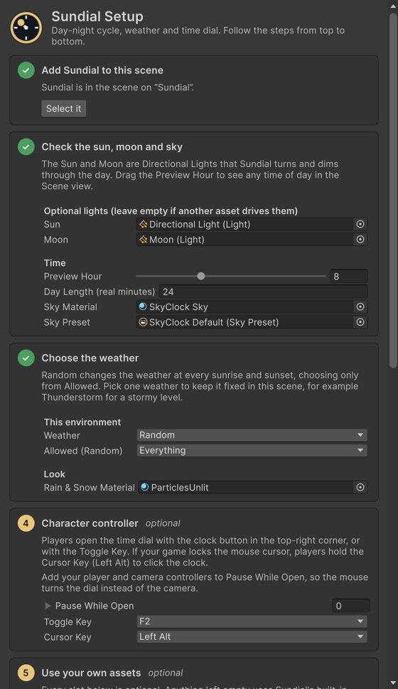
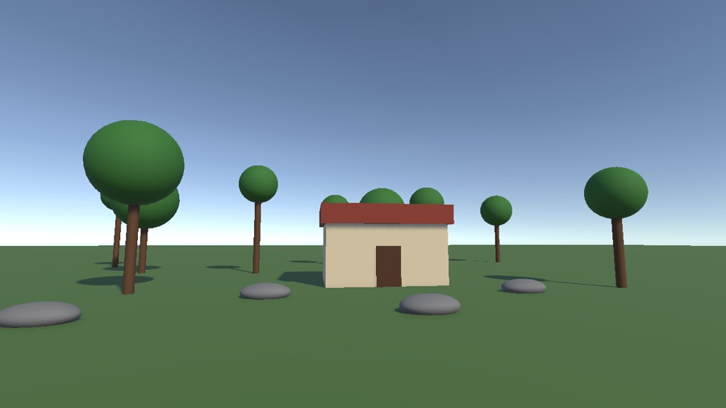
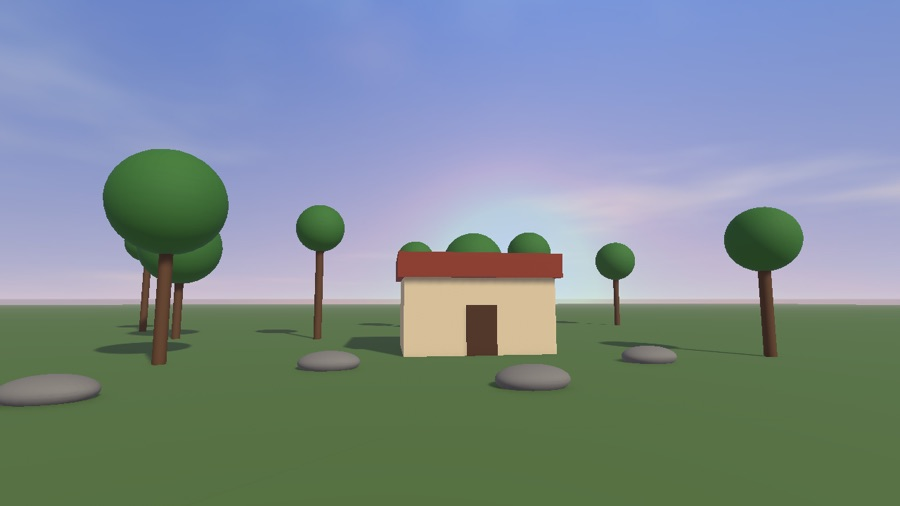
4.2 Sun, moon and sky
This step shows the lights and sky that Sundial uses. They are already filled in after step 1.
- Sun and Moon: Directional Lights that Sundial turns and dims through the day. Leave them empty if another system controls your lights.
- Preview Hour: drag it to see any time of day in the Scene and Game views, without pressing Play.
- Day Length: real minutes for one in-game day (24 by default).
- Sky Material and Sky Preset: the sky's material and pictures. See 9.1 to use your own.
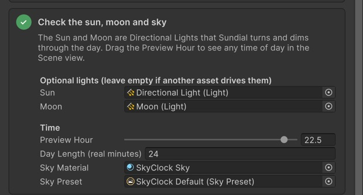
4.3 Weather
- Weather: Random changes the weather at every sunrise and sunset. Pick one weather to keep it fixed in this scene, for example Thunderstorm for a stormy level.
- Allowed (Random): the weathers Random may choose. A desert might allow only Clear and Thunderstorm.
- Rain & Snow Material: URP's
ParticlesUnlit, already assigned.
Chapter 6 describes every weather.
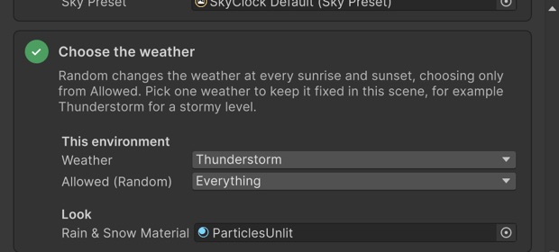
4.4 Character controller (optional)
Many character controllers lock and hide the mouse cursor, for example Unity's Starter Assets. Sundial handles this for you:
- Players hold Left Alt (the Cursor Key) to show the cursor and click the clock, or press F2 (the Toggle Key) to open the dial directly.
- While the dial is open, the cursor is free; afterwards it is restored exactly as it was.
Add your player and camera controllers to Pause While Open. They are switched off while the dial is open or Alt is held, so moving the mouse turns the dial instead of the camera.
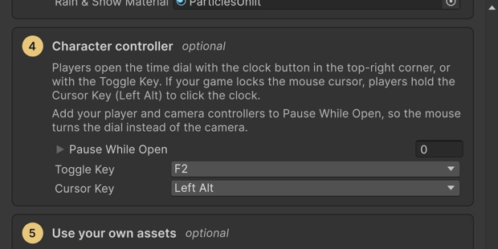
4.5 Your own assets (optional)
Step 5 collects every slot for your own content in one place: sky pictures, sounds, lightning prefabs and colours, and effects for each weather. Anything left empty uses Sundial's built-in version. Chapter 9 explains each slot.
Click Create my own Sky Preset to make an editable copy of the current sky that you can fill with your own pictures.
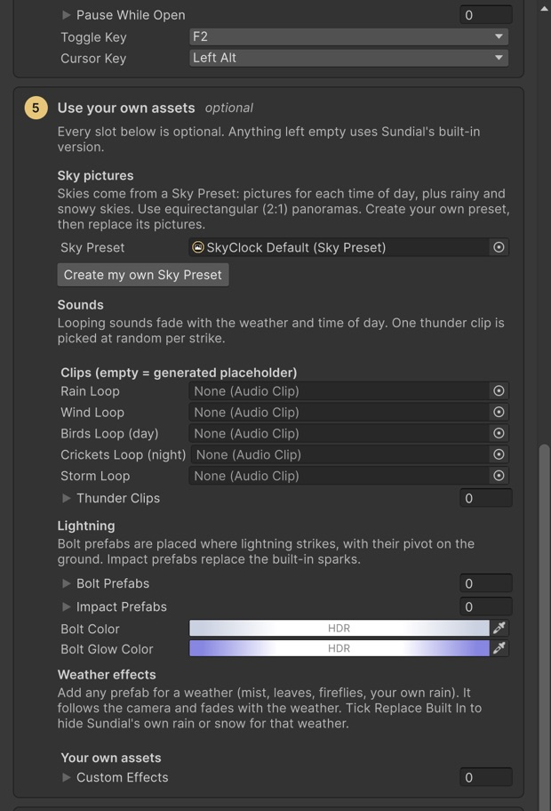
4.6 Press Play
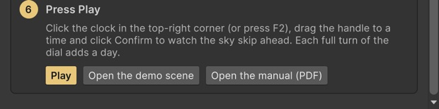
Click Play. Click the clock in the top-right corner (or press F2), drag the handle to a time and click Confirm to watch the sky skip ahead. The step also has buttons for the demo scene and this manual.
4.7 Setting up by hand
To set up without the Setup window:
- Create an empty GameObject and add SkyClock, SkyboxCycle, WeatherSystem, AmbientAudio and SkyClockUI. The components find each other.
- On SkyClock, assign your Directional Light to Sun and, optionally, a second pale-blue Directional Light to Moon.
- On SkyboxCycle, set Sky Material to
SkyClock Skyand Preset toSkyClock Default, then disable and enable the component once to apply the sky. - On WeatherSystem, set Particle Material to
Packages/Universal RP/Runtime/Materials/ParticlesUnlit.
5. Day and Night
5.1 How time works
SkyClock keeps the time as an hour (0–24) and a day number. In Play mode the hour advances by itself: one in-game day lasts Day Length Minutes of real time (24 by default, so one in-game hour is one real minute). Paused stops time.
Hours from Day Start (06:00) up to Night Start (18:00) count as day; the rest is night. These hours decide when the On Sunrise and On Sunset events fire, when the weather changes, and what the clock shows.
5.2 The sky through the day
SkyboxCycle reads the time-of-day keys in the Sky Preset (for example night, sunrise, day and sunset) and blends smoothly from one picture to the next. With each key it also blends the ambient light colour and the sky's exposure. The sky turns slowly (Cloud Speed), so the clouds drift.
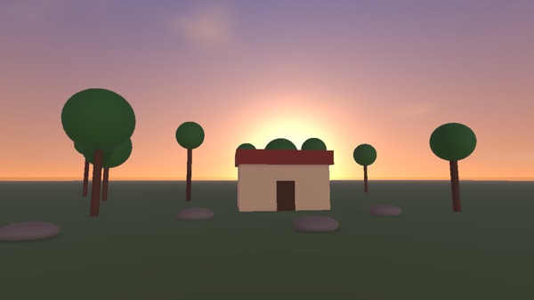
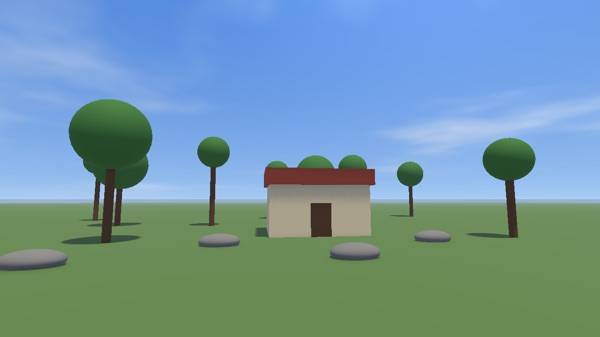
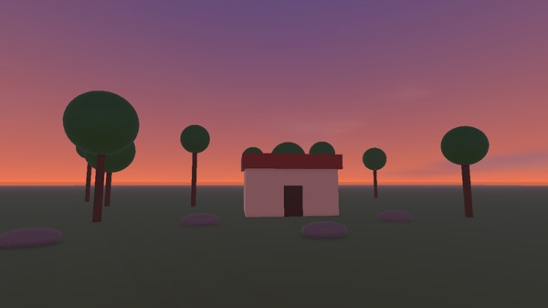
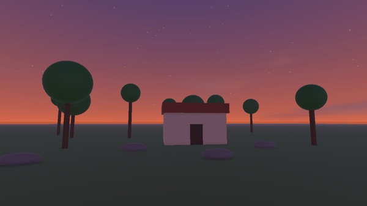
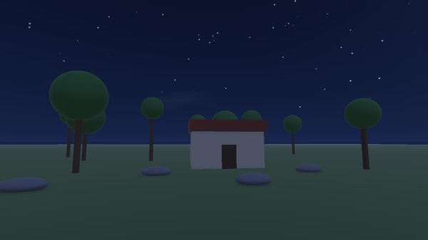
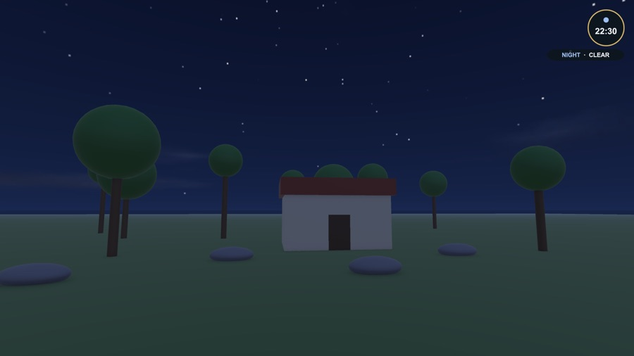
The sun light rises, crosses the sky and sets along a path whose compass direction is set by Sun Yaw; it is brightest at noon (Sun Peak Intensity). The moon light takes over at night and is brightest at midnight (Moon Peak Intensity).
5.3 Bright nights
Nights are stylized and bright enough to play in, as in many adventure games. Night Ambient on SkyboxCycle sets the darkest the ambient light can get, and Moon Peak Intensity on SkyClock sets the moonlight. For realistic dark nights, set Night Ambient close to black and lower the moon's intensity.
5.4 Previewing in the Editor
Drag Hour on SkyClock (or Preview Hour in the Setup window) to see any time of day in the Scene and Game views without pressing Play. The sky, lights, ambient light and fog all update.
6. Weather
6.1 The six weathers
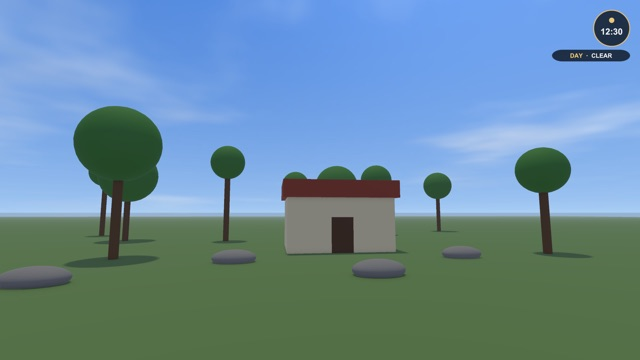
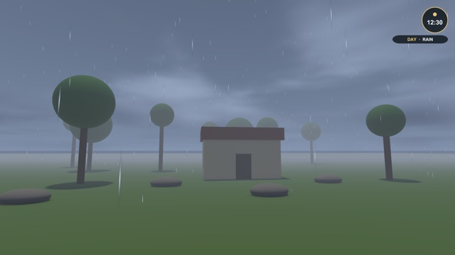
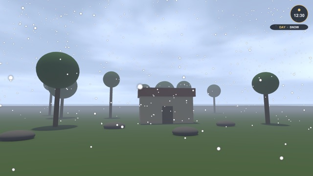
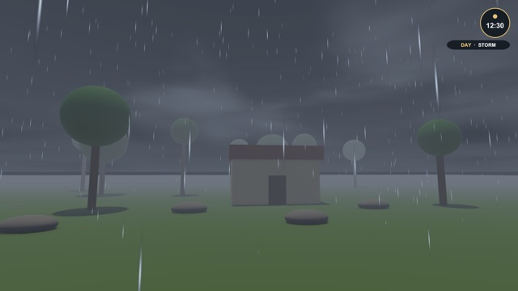
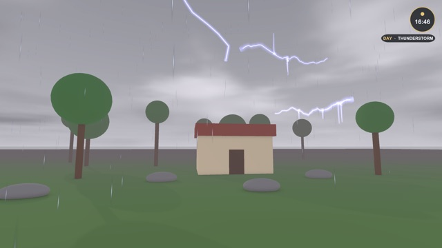
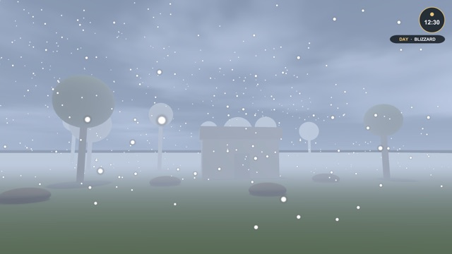
Weather changes fade in over Fade Hours (one in-game hour by default): the weather sky blends over the time-of-day sky, the fog thickens, and the sun and ambient light dim.
6.2 Choosing the weather
Choice on WeatherSystem decides the weather for this environment:
- Random: a new weather is chosen when the game starts and at every sunrise and sunset, only from the weathers ticked in Allowed. Some weathers are more common than others; the relative chances are Clear 3, Rain 1.5, Snow 1, Storm 0.6, Thunderstorm 0.4 and Blizzard 0.3.
- A fixed weather (for example Thunderstorm or Blizzard): that weather is always shown in this scene.
Scripts can also change the weather at any time; see 11.2.
6.3 Rain
Rain is never constant. During Rain and Storm, the rain picks a new strength every 15–45 seconds, anywhere between Lightest Rain and full strength, and the rain sound follows it. A Thunderstorm starts dry; at each change there is a Thunderstorm Shower Chance (40%) of a shower.
6.4 Lightning
Storm and Thunderstorm have lightning. Every half second there is a Strike Probability chance of a strike (8% by default; 1 means a strike every half second). The first strike comes First Strike After Seconds after the storm has set in.
- Bolts branch naturally, grow from the cloud to the ground in a fraction of a second, then flash and fade with a few re-strokes.
- Where they land: between 15 and 150 metres from the camera (Strike Distance), within Strike Spread degrees of the view direction, so most strikes are visible. Set Strike Spread to 360 for strikes all around.
- Several bolts: each strike may add up to two extra bolts (Extra Bolt Chance) close to the first (Bolt Cluster Radius).
- Impacts: a flash, a light, sparks and flying debris where a bolt lands (Impact Bursts).
- Cloud lightning: small flickers inside the clouds between strikes (Cloud Lightning).
- Flash: the scene lights up, and a short burst of Bloom makes the bolt glow (Lightning Bloom).
- Thunder arrives after a delay that matches the strike's distance (the speed of sound), and distant strikes sound quieter.
7. The Clock and Time Dial
7.1 The clock button
In Play mode, a round clock in the top-right corner shows the current time. Its small dot is gold by day and blue at night. Below it, a label shows whether it is DAY or NIGHT and the current weather.
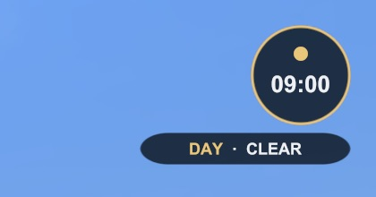
7.2 Opening the dial
- Click the clock, or press F2 (the Toggle Key).
- If your game locks the mouse cursor, hold Left Alt (the Cursor Key) to show the cursor and click the clock.
- Close the dial with Cancel, Esc, F2, or a click outside it.
7.3 Using the dial
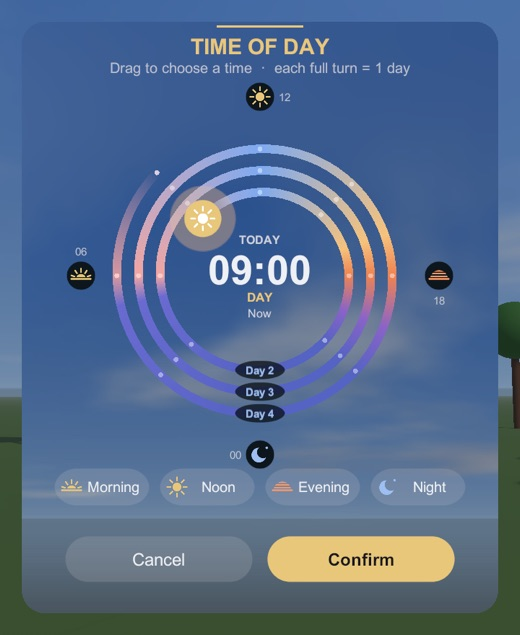
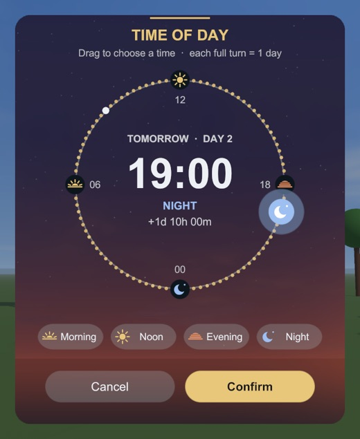
| Action | Result |
|---|---|
| Drag the handle | Picks a time. The dial snaps to 5-minute steps (Snap Minutes). |
| Keep turning clockwise | Each full turn adds a day. The label shows, for example, Tomorrow · Day 2 or In 3 days, and how far ahead the time is. |
| Turn back | Removes days again, but never goes earlier than the current time. |
| Morning · Noon · Evening · Night | Jump to 07:00, 12:00, 18:00 or 00:00 on the day currently chosen. |
| Confirm | Skips the sky ahead to the chosen time (see 7.4). |
The dial shows the part of the day at a glance:
- The spiral: it starts at the current time and moves one loop outward per day, so the further out a point is, the more days ahead it lies. It is painted in the sky colour of every hour, and a chip marks each midnight (Day 2, Day 3 …). The dial shows three days; for longer skips the handle stays on the outer loop and the label shows the full count.
- Markers around the spiral: sunrise at 06, sun at 12, sunset at 18 and moon at 00.
- The handle changes as you turn it: a sunrise in the morning, a sun by day, a sunset in the evening and a moon at night, each in its own colour.
- The card's background shows the sky at the chosen time, taken from your Sky Preset, so it matches your scene.
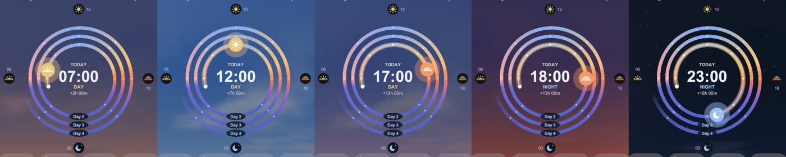
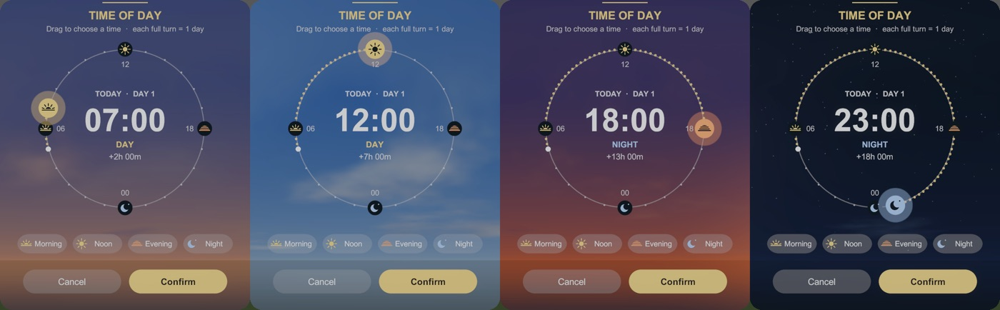
7.4 Skipping time
After Confirm, the dial stays open and shows the skip: the gold trail along the spiral shrinks back towards the current time, and the sky, light and card background move through the hours. A one-day skip takes about 3.75 seconds (Skip Seconds × 1.5); longer skips take longer, up to three times Skip Seconds. Time then carries on from the new time.
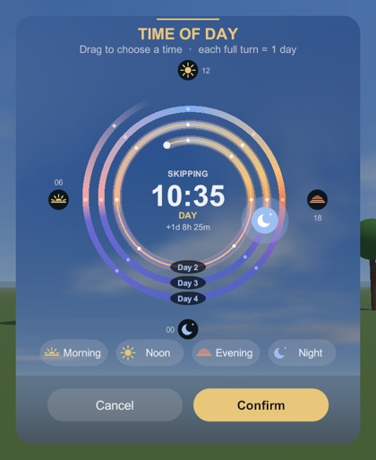
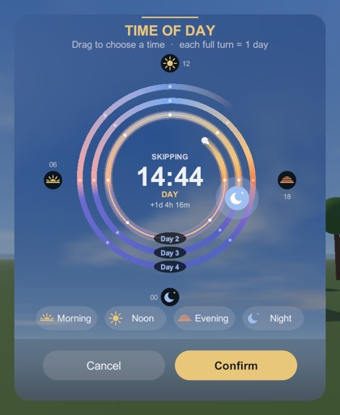
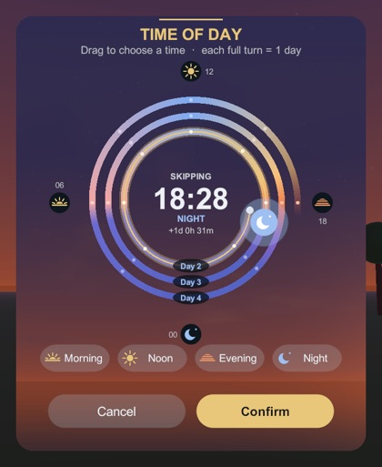
8. Ambient Audio
AmbientAudio plays layered ambience that follows the weather and the time of day. Each layer fades smoothly to its target volume.
| Layer | When it plays |
|---|---|
| Rain | During Rain, Storm and Thunderstorm showers; its volume follows the rain's strength. |
| Wind | Always softly; stronger in snow and storms, and loudest in a blizzard. |
| Birds | By day in calm weather. |
| Crickets | At night in calm weather. |
| Storm | Optional continuous storm ambience during Storm and Thunderstorm, only if you assign a clip. |
| Thunder | After each lightning strike, delayed by the strike's distance; distant thunder is quieter. |
Without your own clips, Sundial generates simple placeholder sounds, so the demo works out of the box. For a finished game, assign recorded sounds (see 9.2).
9. Using Your Own Assets
Every part of Sundial can use your own content. All slots are in step 5 of the Setup window and on the components in the Inspector. An empty slot uses the built-in version.
9.1 Skies
- In the Setup window, click Create my own Sky Preset (or use Assets › Create › SkyClock › Sky Preset). A preset made in the Setup window starts as a copy of the current sky.
- Select it and open Keys. Each key has an Hour, a Sky picture, an Ambient colour and an Exposure. Replace the pictures with your own.
- Set Rain Sky and Snow Sky for bad weather.
- Assign the preset to SkyboxCycle › Preset (the Setup window does this for you).
9.2 Sounds
On AmbientAudio, assign Rain Loop, Wind Loop, Birds Loop, Crickets Loop and Storm Loop (looping clips), and any number of Thunder Clips (one is picked at random per strike). Assign the loops before pressing Play; Storm Loop and Thunder Clips can also be changed during Play.
9.3 Lightning
- Bolt Prefabs (WeatherSystem): your own bolt, placed where lightning strikes. Put the prefab's pivot where the bolt touches the ground; it is turned to face the camera and removed after Bolt Prefab Lifetime.
- Impact Prefabs: your own explosion, sparks or scorch mark where a bolt lands. Replaces the built-in impact and is removed after Impact Prefab Lifetime.
- Bolt Color and Bolt Glow Color: the colours of the built-in bolt's core and glow (HDR, so Bloom catches them).
9.4 Weather effects
Custom Effects on WeatherSystem adds any prefab to any weather: mist, falling leaves, fireflies, dust, embers, or your own rain. For each entry, choose a Weather and a Prefab. The prefab follows the camera and fades in and out with the weather: its particle emission and AudioSource volumes are scaled automatically. Tick Replace Built In to hide Sundial's own rain or snow for that weather.
10. Component Reference
Every Inspector setting, with its default value.
10.1 SkyClock
Keeps the time, moves the sun and moon, and runs events and timers.
| Setting | Default | Description |
|---|---|---|
| Hour | 8 | The current hour (0–24). Drag it in Edit mode to preview. |
| Day | 1 | The current day number. |
| Day Length Minutes | 24 | Real minutes for one in-game day. |
| Paused | Off | Stops time from passing. |
| Day Start / Night Start | 6 / 18 | Hours from Day Start up to Night Start count as day. |
| Sun / Moon | None | Directional Lights that SkyClock turns and dims. Optional. |
| Sun Yaw | -30 | Compass direction of the sun's path, in degrees. |
| Sun / Moon Peak Intensity | 1.2 / 0.25 | Light intensity at noon and at midnight. |
| Events | — | On Time Changed 01, On Hour Changed, On Day Changed, On Sunrise, On Sunset. |
10.2 SkyboxCycle
Draws the sky, sets the ambient light and fog, and shows the weather sky.
| Setting | Default | Description |
|---|---|---|
| Sky Material | None | Use SkyClock Sky. |
| Preset | None | A Sky Preset. When set, it replaces Keys, Rain Sky and Snow Sky. |
| Keys | — | Time-of-day keys: hour, sky picture, ambient colour, exposure. |
| Rain Sky / Snow Sky | None | Pictures for rainy and snowy weather. |
| Cloud Speed | 2 | Degrees the sky turns per in-game hour. |
| Fog Density / Weather Fog Density | 0.004 / 0.035 | Fog in clear weather and in full rain or snow. |
| Night Ambient | Moonlit blue | The darkest the ambient light gets. |
| Storm Sky Brightness | 0.65 | Brightness of the storm sky. |
| Storm Sky Saturation | 0.35 | Colour left in the storm sky (0 = grey). |
| Storm Light | 0.6 | Ambient light remaining under a storm. |
10.3 WeatherSystem
Chooses the weather, runs rain and snow, and creates lightning.
| Setting | Default | Description |
|---|---|---|
| Choice | Random | Random, or one fixed weather. |
| Allowed | All | The weathers Random may choose. |
| Particle Material | None | Material for rain and snow (URP ParticlesUnlit). |
| Fade Hours | 1 | In-game hours a weather change takes. |
| Rain Rate / Snow Rate | 1500 / 500 | Particles per second at full strength. |
| Blizzard Snow Multiplier | 3 | How much denser blizzard snow is. |
| Blizzard Wind | 14 | Sideways speed of blizzard snow (m/s). |
| Lightest Rain | 0.25 | Weakest random rain strength. |
| Thunderstorm Shower Chance | 0.4 | Chance of a shower at each rain change. |
| Min / Max Seconds Between Rain Changes | 15 / 45 | How often the rain picks a new strength. |
| Bad Weather Light | 0.55 | Sun and moon brightness in full rain or snow. |
| First Strike After Seconds | 2 | Delay before the first strike. |
| Strike Probability | 0.08 | Chance of a strike every half second. |
| Strike Distance | 15–150 m | How far from the camera strikes land. |
| Strike Spread | 150° | Angle around the view direction (360 = all around). |
| Extra Bolt Chance | 0.35 | Chance of each extra bolt (up to three per strike). |
| Bolt Cluster Radius | 25 m | How close extra bolts land to the first. |
| Impact Bursts | On | Flash, light, sparks and debris on impact. |
| Cloud Lightning | On | Flickers in the clouds every 0.4–2 seconds. |
| Lightning Bloom | 3 | Extra Bloom during a flash (0 = off). |
| Bolt Color / Bolt Glow Color | White-blue / violet | Colours of the bolt core and glow. |
| Custom Effects | Empty | Your prefabs per weather (9.4). |
| Bolt / Impact Prefabs | Empty | Your lightning prefabs (9.3); lifetimes 1.5 s and 3 s. |
| Events | — | On Weather Changed, On Lightning. |
10.4 AmbientAudio
| Setting | Default | Description |
|---|---|---|
| Rain, Wind, Birds, Crickets Loop | Empty | Looping clips; empty uses a generated placeholder. |
| Thunder Clips | Empty | One is picked at random per strike. |
| Storm Loop | Empty | Optional storm ambience. |
| Master Volume | 0.8 | Overall volume. |
| Fade Speed | 0.5 | Volume change per real second. |
10.5 SkyClockUI
| Setting | Default | Description |
|---|---|---|
| Accent / Panel / Text / Night Color | Gold / dark / white / pale blue | Colours of the clock and dial. |
| Skip Seconds | 2.5 | Base length of the skip animation. |
| Snap Minutes | 5 | Step size when dragging the dial. |
| Toggle Key | F2 | Opens and closes the dial. |
| Cursor Key | Left Alt | Hold to show a locked cursor (None = off). |
| Pause While Open | Empty | Components switched off while the dial is open or the Cursor Key is held. |
10.6 Sky Preset
A ScriptableObject that stores a complete sky look: Keys (time-of-day pictures, ambient colours and exposures), Rain Sky and Snow Sky. Create one with Assets › Create › SkyClock › Sky Preset or the Setup window.
11. Script Reference
All types are in the SkyClockKit namespace: add using SkyClockKit; to your script.
11.1 SkyClock
| Member | Description |
|---|---|
float hour, int day | The current hour (0–24) and day. |
float TotalHours | Hours since Day 1, 00:00. |
bool IsNight, IsNightAt(float h) | Whether it is night now, or at an hour. |
string TimeString | The time as text, such as "18:30". |
bool IsFastForwarding | True while a skip is playing. |
SetTime(float h), SetTime(int h, int m) | Jumps to a time on the current day. |
SetMorning(), SetNoon(), SetEvening(), SetNight() | Jumps to a preset time. |
AddHours(float hours) | Moves time forward instantly. |
FastForwardHours(float hours, float seconds = 2) | Plays a skip of any length (48 = two days). |
FastForwardTo(float hour, float seconds = 2) | Skips to the next occurrence of an hour. |
SetPaused(bool paused) | Stops or resumes time. |
After(float hours, Action callback) | Calls back once after that many in-game hours. |
At(int day, float hour, Action callback) | Calls back once at a day and hour. |
ClearTimers() | Removes all pending timers. |
Save(string key = "SkyClock") | Saves the day, hour and weather (PlayerPrefs). |
bool Load(string key = "SkyClock") | Loads them; returns false when there is no save. Timers are not saved. |
| Events | onTimeChanged01, onHourChanged, onDayChanged, onSunrise, onSunset. |
11.2 WeatherSystem
| Member | Description |
|---|---|
enum Weather | Clear, Rain, Snow, Storm, Thunderstorm, Blizzard. |
Weather Current | The weather that was chosen. |
Weather Showing, float Amount | The weather on screen, and how strongly it shows (0–1). |
float RainIntensity | The current rain strength (0–1). |
Set(Weather w) | Changes the weather with a fade. |
SetImmediate(Weather w) | Changes the weather at once. |
Roll() | Chooses the weather again (Choice, Allowed and chances). |
Strike() | Creates a lightning strike now. |
bool IsAllowed(Weather w) | Whether a weather is in Allowed. |
| Events | onWeatherChanged (the new weather), onLightning. |
11.3 SkyClockUI
| Member | Description |
|---|---|
Open(), Close() | Opens or closes the time dial. |
bool IsOpen | Whether the dial is open. |
Confirm() | Confirms the chosen time, like the Confirm button. |
11.4 Examples
A quest that says "come back the day after tomorrow":
using SkyClockKit;
using UnityEngine;
public class ReturnQuest : MonoBehaviour
{
public SkyClock clock;
public void Accept()
{
clock.After(48f, () => Debug.Log("The merchant is back."));
}
}
Torches at night, and a warning before storms:
clock.onSunset.AddListener(() => torches.SetActive(true));
clock.onSunrise.AddListener(() => torches.SetActive(false));
weather.onWeatherChanged.AddListener(w =>
{
if (w == WeatherSystem.Weather.Thunderstorm) Debug.Log("Find shelter!");
});
A cutscene at dusk with a storm:
clock.FastForwardTo(19f, 3f); // skip to 19:00 over 3 seconds weather.SetImmediate(WeatherSystem.Weather.Storm); weather.Strike(); // a strike right now
12. Editor Tools
Sundial Setup window
Tools › Sundial › Setup Guide. It opens by itself once after import; see chapters 3 and 4. It adds Sundial to the open scene in one click, shows a check for each finished step, and keeps up with changes: it rebuilds itself when you add or remove Sundial or open another scene. While Play mode is running its settings are read-only, because changes made in Play mode are not kept.
Component icons
Each Sundial component has its own icon in the Inspector and the Project window:
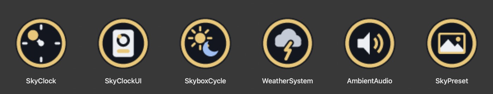
Edit-mode preview
SkyClock and SkyboxCycle run in Edit mode: changing Hour updates the sky, lights, ambient light and fog in the Scene view, so you can light and art-direct a scene at any time of day without pressing Play.
13. Technical Notes
Render pipeline
Sundial's two shaders, SkyClock/Panoramic Blend (the sky) and SkyClock/Lightning (bolts and impacts), are written for the Universal Render Pipeline. Lightning uses additive HDR colour, so it glows with Bloom; during a flash, a temporary global Volume adds extra Bloom.
Enter Play Mode options
From Unity 6.6, new projects enter Play mode without reloading scripts, so static variables keep their values between Play sessions. Sundial's runtime scripts keep no changing static data and use no static events, so every Play session starts clean. No settings are needed.
Performance
- Rain and snow are single particle systems that follow the camera; their amounts are set by Rain Rate and Snow Rate.
- The sky is one material, and the time dial is one uGUI canvas built when the game starts.
- The built-in lightning objects are created once and reused for every strike.
- Placeholder sounds are generated once at start; assigning your own clips skips that.
Assemblies
SkyClock (runtime) references Unity.InputSystem, Unity.RenderPipelines.Core.Runtime, Unity.RenderPipelines.Universal.Runtime and UnityEngine.UI. SkyClock.Editor is Editor-only and references SkyClock.
14. Troubleshooting
| Problem | Solution |
|---|---|
| The Setup window did not open after import. | Open it from Tools › Sundial › Setup Guide. It opens by itself only once per project. |
| The sky stays black or does not change. | Check that SkyboxCycle has Sky Material and Preset set and is enabled. After assigning the material by hand, disable and enable SkyboxCycle once. |
| Pink sky, rain or lightning. | The project is not using URP, or the particle material is not a URP material. Use URP and ParticlesUnlit. |
| No rain or snow appears. | Set Particle Material on WeatherSystem and make sure a camera is tagged MainCamera. |
| Lightning does not glow. | Add Bloom to a Volume in your scene, or raise Lightning Bloom. |
| I rarely see lightning. | Raise Strike Probability, or lower Strike Spread so strikes land in view. |
| The clock cannot be clicked. | Your game locks the cursor: hold Left Alt, or press F2. If an old EventSystem in your scene uses the Standalone Input Module, replace it with the Input System UI Input Module. |
| Moving the mouse on the dial turns the camera. | Add your player and camera controllers to SkyClockUI › Pause While Open. |
| Nights are too bright or too dark. | Adjust SkyboxCycle › Night Ambient and SkyClock › Moon Peak Intensity. |
| A seam is visible in my own sky. | Turn off Generate Mip Maps on the sky texture and use a 2:1 panorama. |
| F2 or Alt does nothing. | Sundial uses the Input System. Check Project Settings › Player › Active Input Handling, and click the Game view so it has keyboard focus. |
| The weather changes when I don't want it to. | Set Choice to one weather instead of Random, or untick weathers in Allowed. |
15. Support and Version History
Support
For questions, bug reports or suggestions, contact the publisher through Sundial's Asset Store page. Please include your Unity version and, for errors, the full Console message.
Version history
| Version | Changes |
|---|---|
| 1.0.0 | First release: day-night cycle with blended panoramic skies; six weathers with random or fixed weather per environment; lightning with impacts, cloud lightning and Bloom; ambient audio with generated placeholders; clock and multi-day time dial with animated skip; slots for your own skies, sounds, lightning and effects; timers, events, save and load; the Sundial Setup window; component icons; demo scene. |